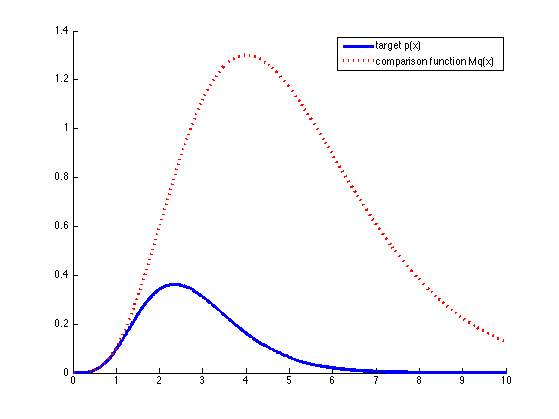

% Rejection sampling from a Gamma distribution % Based on http://users.aims.ac.za/~ioana/cp2.pdf alpha = 5.7; lambda = 2; k = floor(alpha); M = gampdf(alpha-k, alpha, 1/lambda) / ... gampdf(alpha-k, k, 1/(lambda-1)); figure; hold on xs = 0:0.01:10; plot(xs, gampdf(xs,alpha,1/lambda), 'b-','linewidth',3); plot(xs, M*gampdf(xs,k,1/(lambda-1)), 'r:','linewidth',3); legend('target p(x)', 'comparison function Mq(x)') printPmtkFigure('rejectionSamplingDemo')